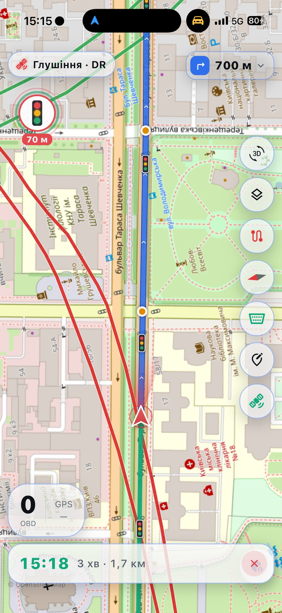
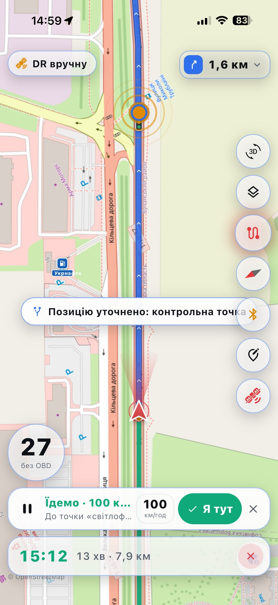
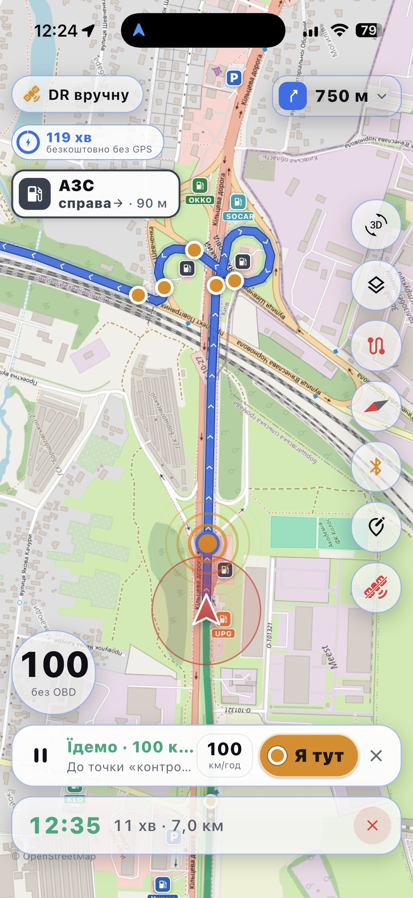
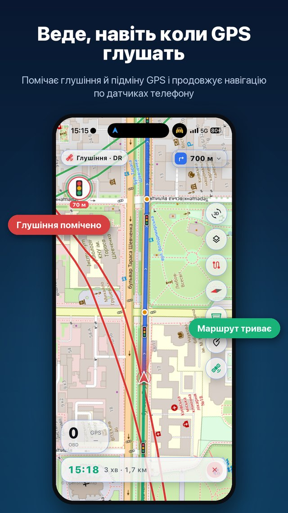
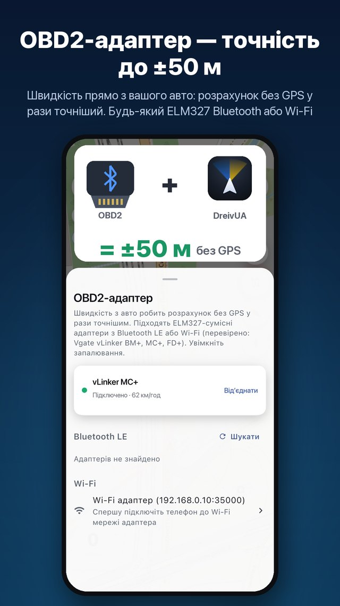
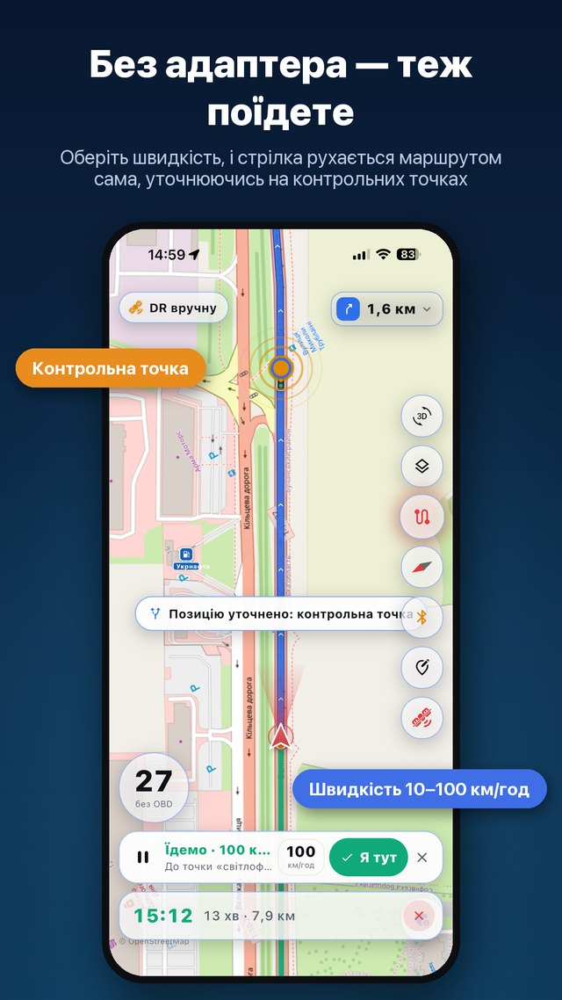
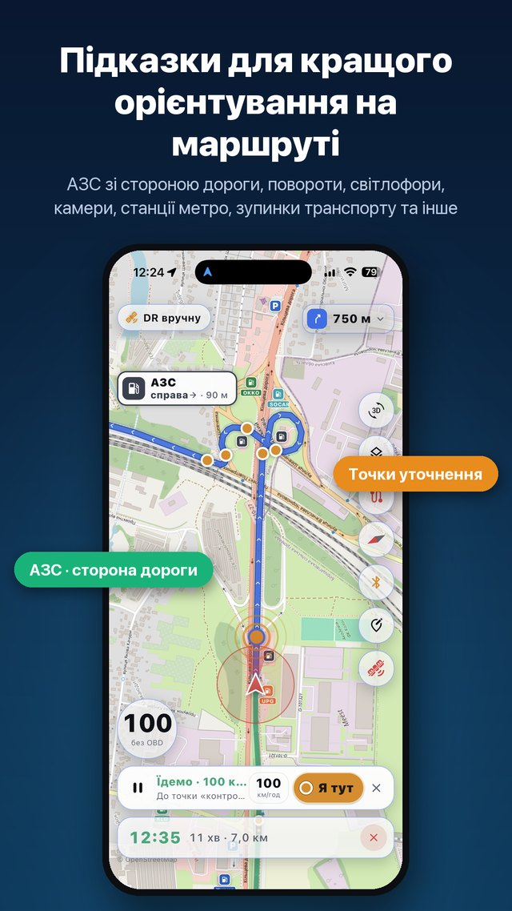
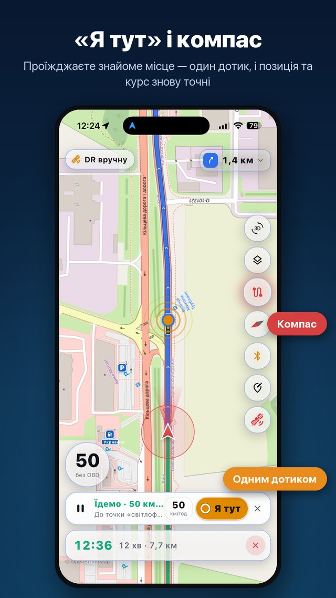
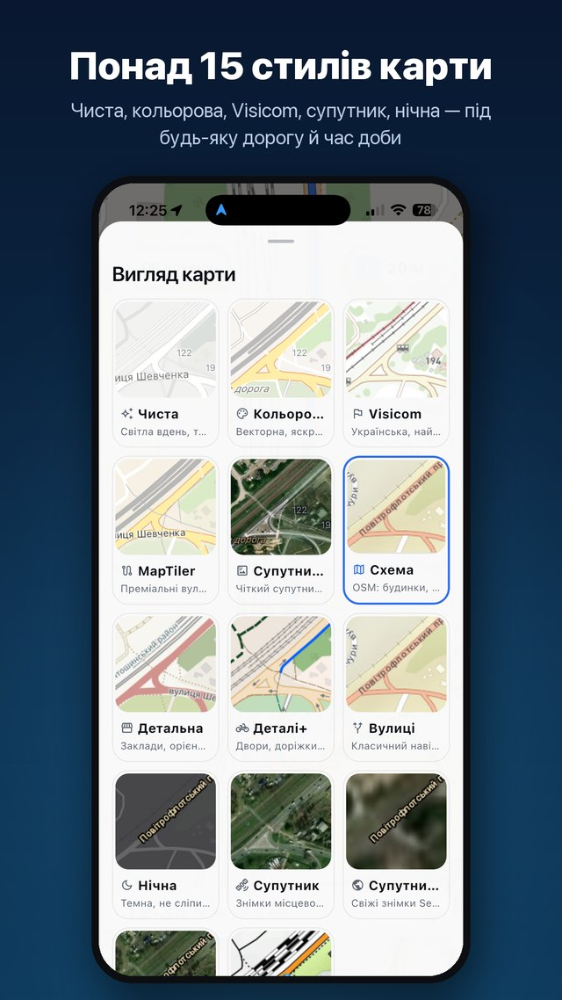
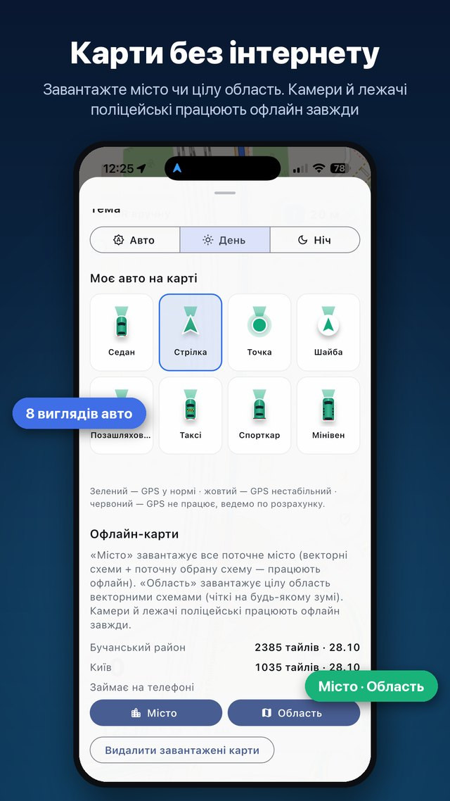

Навігатор, що веде, навіть коли GPS глушать
Коли супутниковий сигнал зникає або його підмінюють, DreivUA не губиться: він рахує ваш шлях по датчиках телефону, OBD2-адаптеру та прокладеному маршруту — і веде далі.

Звичайна навігація по супутниках — точно й безкоштовно.
Сигнал «стрибає» — DreivUA перевіряє кожну точку й не дає збити себе з маршруту.
Супутники недоступні чи підмінені — ведемо по розрахунку, без зупинки.
Три джерела замість супутників
РЕБ може заглушити GPS, але не може заглушити фізику. DreivUA знає, як рухається ваше авто, — і з цього рахує, де ви є.
Помічає глушіння
Відстежує зникнення фіксу, «стрибки» позиції, неможливу швидкість і підозріло ідеальний сигнал — ознаки глушіння й підміни.
Рахує шлях сам
Гіроскоп і акселерометр телефону, швидкість з OBD2-адаптера та геометрія маршруту — разом дають вашу позицію без супутників.
Уточнюється на ходу
Перехрестя, світлофори, станції метро — контрольні точки, де позиція підтягується. Один дотик «Я тут» — і стрілка знову точна.
Рух маршрутом, навіть без OBD2
Немає адаптера — не біда. Стрілка рухається маршрутом сама, з розгоном, гальмуванням і зупинками на поворотах та світлофорах.
- Позиція уточнюється на контрольних точках
- Кнопка «Я тут» з курсом по компасу
- «Продовжити рух» — без стрибків

Підказки, щоб не загубитися
Коли не видно, де ви, важливо бачити, що попереду. DreivUA заздалегідь показує все, за що можна «зачепитися» поглядом.
- АЗС з брендом і стороною дороги — за 200 м
- Повороти, світлофори, STOP, залізничні переїзди — за 150 м
- Камери автофіксації та лежачі поліцейські
- Станції метро й зупинки громадського транспорту

Точність до ±50 метрів — без GPS
Швидкість береться прямо зі спідометра вашого авто. Розрахунок шляху стає в рази точнішим, а стрілка не «повзе» на стоянці.
Підходять ELM327-сумісні адаптери з Bluetooth LE або Wi-Fi (перевірено: Vgate vLinker BM+, MC+, FD+). Відкритий стандарт SAE J1979. Адаптер — необов'язковий.
Усе, що потрібно водію
Повноцінний навігатор на кожен день — і надійний помічник там, де інші здаються.
Офлайн-карти
Завантажте місто або цілу область — навігація працює без інтернету.
Камери й лежачі
Камери автофіксації та лежачі поліцейські — завжди, навіть офлайн.
Метро на карті
Станції й лінії метро Києва, Харкова та Дніпра.
Історія поїздок
Автозапис треків і лінія пройденого шляху на карті — від години до доби.
15+ стилів карти
Чиста, кольорова, Visicom, супутник, нічна — під будь-яку дорогу.
Ваше авто на карті
Стрілка, седан, таксі, позашляховик — 8 варіантів вигляду.







Звичайна навігація — безкоштовно
Платити потрібно лише за режим без GPS — і то не одразу.
Навігація з GPS
Маршрути, пошук, камери, офлайн-карти — завжди без оплати.
Навігація без GPS
Спробуйте режим РЕБ у реальній поїздці — без жодних зобов'язань.
DreivUA Преміум
Необмежена навігація без GPS. Скасувати можна будь-коли в App Store чи Google Play.
Встановіть DreivUA на Android
Застосунок зараз у тестуванні в Google Play. Кілька хвилин — і він у вас на телефоні. Просто пройдіть кроки по черзі.
- Натисніть кнопку нижче — відкриється сторінка «DreivUA» у Google Групах.
- Увійдіть у свій Google-акаунт, якщо попросить.
- Натисніть «Приєднатися до групи» → «Приєднатися».
- Натисніть кнопку нижче — відкриється сторінка тестування Google Play.
- Натисніть «Стати тестувальником».
- Натисніть «Завантажити з Google Play» → «Встановити».
- Відкрийте DreivUA і дозвольте доступ до геолокації.
- Будь ласка, не видаляйте застосунок і не виходьте з групи 14 днів.
- Відгуки й помилки — у чат: Налаштування → Підтримка.
- «Застосунок недоступний» / «Не знайдено» — ви ще не в групі або увійшли іншим акаунтом. Перевірте, що в групі й у Play Маркеті один і той самий Google-акаунт.
- Кнопки «Встановити» немає — після вступу в групу зачекайте 5–10 хвилин і відкрийте посилання з кроку 2 ще раз.
- Кілька акаунтів на телефоні — у Play Маркеті натисніть на аватарку й перемкніться на той, яким вступали в групу.
Важливо: в обох кроках використовуйте той самий Google-акаунт, що й у Play Маркеті на телефоні.
Часті запитання
Наскільки точна навігація без GPS?
З OBD2-адаптером — до ±50 м, і точність підтягується на кожній контрольній точці. Без адаптера розрахунок грубіший, тому важливо вчасно натискати «Я тут», коли проїжджаєте знайоме місце. Навігація без GPS — це оцінка: стежте за дорогою й знаками.
Чи потрібен OBD2-адаптер?
Ні, він необов'язковий. Але з ним точність помітно вища: застосунок бере реальну швидкість зі спідометра авто. Підходять ELM327-сумісні адаптери з Bluetooth LE або Wi-Fi.
Чи працює без інтернету?
Так. Завантажте карту міста або області заздалегідь — і навігація, камери й лежачі поліцейські працюватимуть офлайн. Для прокладання нового маршруту інтернет бажаний.
Чи збираєте ви мої маршрути?
Ні. Координати, маршрути й записані поїздки лишаються лише на вашому телефоні. На сервер іде тільки знеособлена технічна статистика й звіти про помилки. Детальніше — у Політиці конфіденційності.
Як скасувати підписку?
iPhone: Налаштування → ваше ім'я → Підписки → DreivUA. Android: Play Маркет → профіль → Платежі та підписки → Підписки. Доступ лишається до кінця оплаченого періоду.
Як встановити на Android?
DreivUA для Android зараз у закритому тестуванні. 1) Приєднайтеся до групи тестувальників: groups.google.com/g/dreivua-testers. 2) Відкрийте сторінку тестування → «Стати тестувальником» → встановіть з Google Play. Використовуйте той самий Google-акаунт, що й у Play Маркеті.
Підтримка
Знайшли помилку чи маєте ідею? Напишіть у чат підтримки прямо в застосунку (Налаштування → Підтримка) або на пошту — відповідаємо особисто.
alexeyfeoktistov1@gmail.com